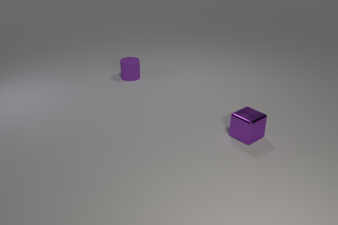
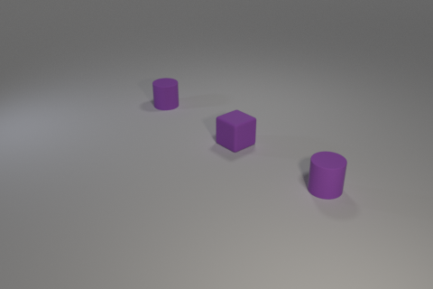

Train:
Candidates: 0, 1, 2
Intended concept: A cylinder has a metallic cube on its left of it.
Solution provided by tool:
Our tool chose candidate 2.
The discriminator given was: Exists q0: cylinder!0. Forall q1: cylinder!1. And(large!1 rubber!1)
The neural baseline model chose candidate 0